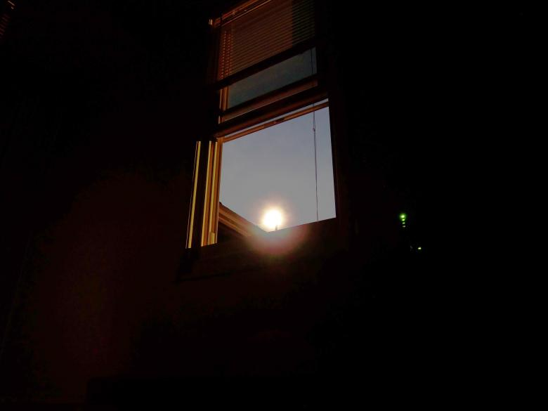

You realize that none of the classrooms so far have had working light bulbs; there is only the sunlight shining through the window. It will be impossible to continue the investigation without sunlight.
Therefore, you must calculate the time of sunrise and sunset. Luckily, your exceptional Batman memory lets you recall the exact equation from the previous room:
$$t=195.5\sin[\frac{2\pi}{365}(d-81.25)] + 731.5$$The date is June 24.
(assume noon is an equal distance from sunrise and sunset)
Sunrise: